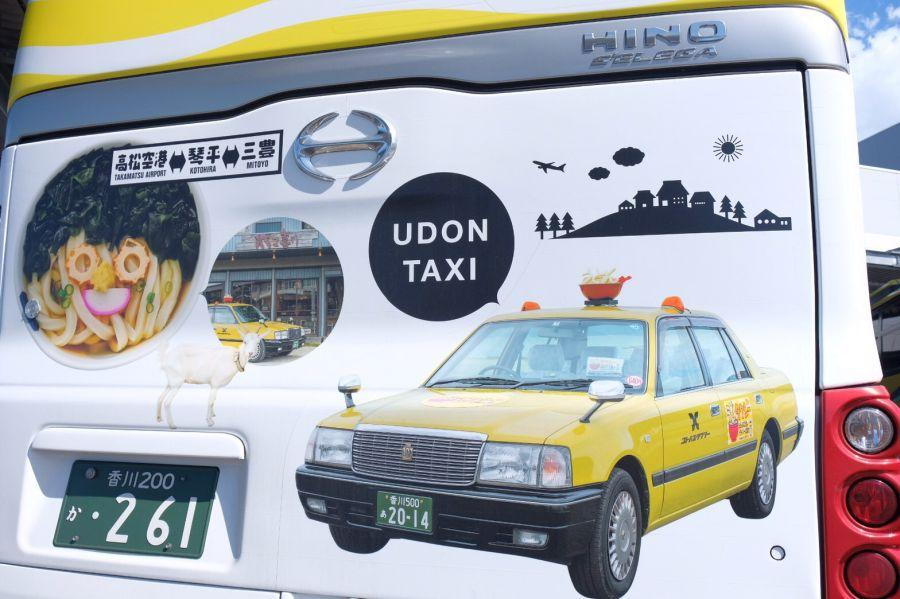
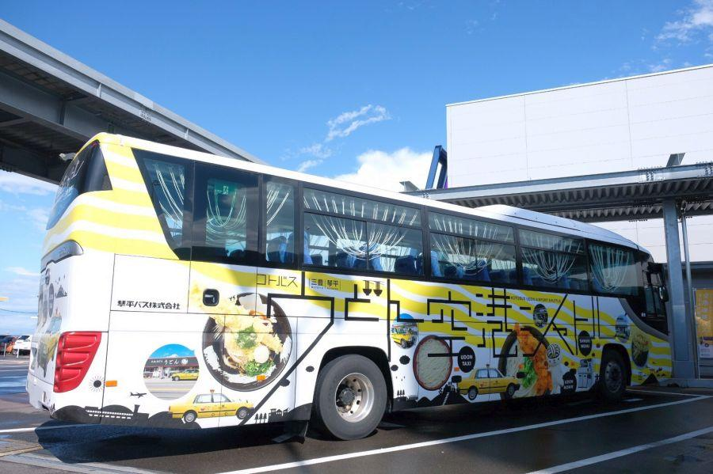
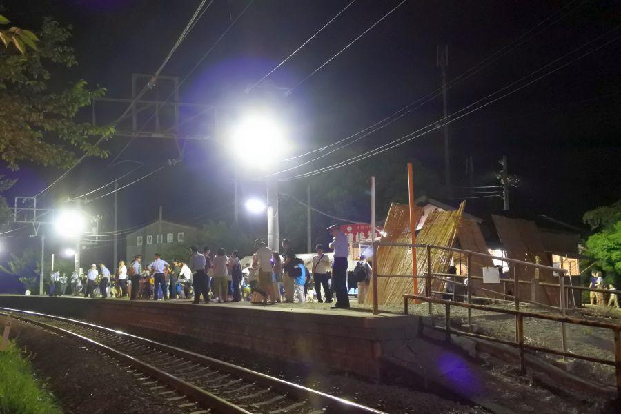
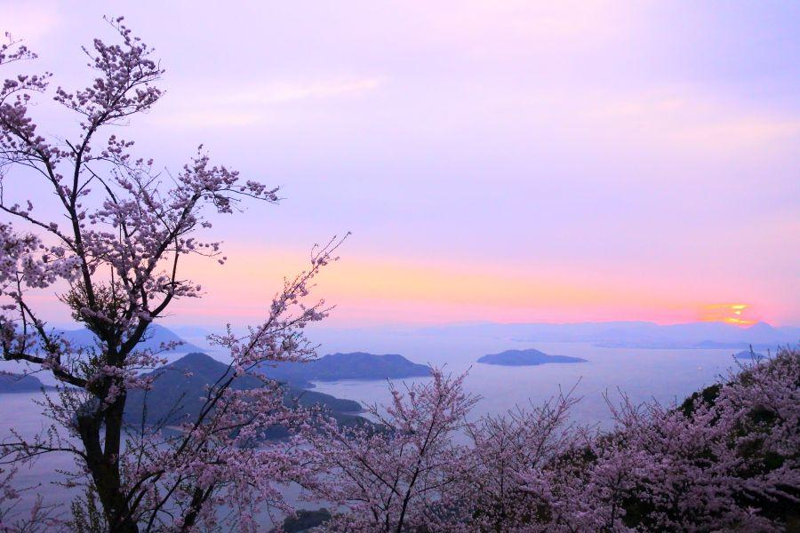

四国の玄関口から話題の三豊への直行バス・前編 < うどん空港シャトル / 香川県 >

当コラムを運営する「琴平バス(コトバス)」に、
高松空港
と
三豊市
を結ぶ、新しい路線バスが誕生しました。
その名も「うどん空港シャトル」
香川県のみならず四国の玄関口から、今話題の絶景スポットへ直行します。
うどん空港シャトルは高松空港から出発
高松空港(香川県高松市)
これまで東京－高松便が中心の地方空港でしたが、近年国内では成田空港。海外では台湾・香港・韓国などへ路線が拡大。すっかり中四国エリアの玄関口として定着しました。
うどん空港シャトルはこちらを起点に運行されています。
バス乗り場は、空港ターミナルを出て左。一番西の端にあります。
0番バス乗り場
「0」番バス乗り場
日本全国の駅において、しばしば見ることができる「0番線」
中四国の駅では、鳥取県米子駅でゲゲゲの鬼太郎ラッピング列車(＝境線)が発着するのが0番線です。
バス乗り場で「0番」はあまり見た記憶がありませんが、調べるとあるにはあるようです。
0番線誕生の経緯は一般的に、Homeや乗降場を追加した場合に誕生する。新しい乗降場は性質上端っこに新設されるのが通常ですが、その際に例えば「1・2・3番」と続く場所に新設できるのであれば「4番」とすれば良い。
が、用地などの問題で「3番線」の横に新設できない場合。
そうなるともう一方の端である「1番線」の隣に新設されるのですが、その時に改めて「1・2・3・4番」と番号を振り直すのは、全看板の差し替え、だけならまだ良い。変更がある場合は、運行関連の書類も全て再申請しなければならない。
その多大な労力を勘案したところで設定されるのが「0番線」です。
↑高松空港の0番バス乗り場の路線行先を見ると、その殆どがコトバスの路線。
琴平バスが高松空港を動かし、新たに発掘した路線が発着しているのが「高松空港の0番バス乗り場」と言えそうです。
見るとお腹が空くうどんラッピング
発車時刻より少し前に、0番バス乗り場に入線したうどん空港シャトル
高松空港と三豊を直接結ぶ定期路線の開設は初！
就航に合わせて新たにラッピングが行われた当路線専用バス。いくつうどんが描かれているのかっていうくらい、さぬきうどんが見えます。これは見ているとお腹が空く。

ラッピングはバス全面に及びます。背後にはうどんコンシェルジュの「うどんタクシー」がラッピング。さぬきうどんの提灯(ちょうちん)がトレードマークです。

車体反対側(運転席側)には、出入口側と異なるさぬきうどんと、三豊市の人気スポットがラッピング。
日本一面積の狭い香川県ですが、交通機関を調べて乗り継いで...となると、難しいもの。外国人の方々なら猶更。
その点、空港から直行のバスであれば、バスに乗車すればそこはMITOYOです。
足元広々、うどん空港シャトル車内
外装をぐるりと見たところで、バスに乗車させてもらいました。
客席の先頭に立った第一印象。
「広い！」
それもそのはず、座席が9列しかありません。
こちらのバスは一般的な高速バスと同サイズの「大型バス/12m」ですが、通常座席は11列で45名乗り(補助席無し)。
それに対してうどん空港シャトル専用車は、9列36名乗り(補助席無し)。2列分で発生する幅を、各席に平均的に割り振られているため、座席がとても広い！ 足を精一杯伸ばすことができます。

これが富裕層をお迎えに来て観光地を周遊するためのバスなら、シートピッチに余裕があるバスが来ても当然というか、不思議ではありません。
けれどうどん空港シャトルは路線バス。不特定多数の乗客を、安全に目的地に運ぶことが使命。運行会社にとってバス運行は事業なので、乗車効率を考えると座席を増やした方が得策です。
そのことを考えると、乗車定員が減少する9列の足元広々バスは、異例のキャスティング。満足度高いです。
うどん、うどん、うどん...
バス名に「うどん」を冠している辺り、さぬきうどんへのこだわりと愛は他の追随を許しません。全ての座席の頭部分に用意されているシートカバーに「うどん」
乗車口から客席へ移る際には「うどん」の暖簾(のれん)
各座席の窓側に吊るされているのも「うどん」を模したもの。
ただしこちらはバスが揺れると、うどんカーテンも揺れて窓側に乗っている乗客に当たるため、実用はどうかなあと感じました。
さて、定刻になりバス発車です。
経由地「琴平」がポイント
バスは琴平Kotori経由で三豊市各地へ。
ここはもう終点・父母ヶ浜(ちちぶがはま)に近いところですが、バスの車窓から見える山の上にある鳥居とお宮さん。
高屋神社(たかやじんじゃ)
天空の鳥居と称される三豊市の絶景スポットの一つ。境内からは鳥居越しに瀬戸内海と四国山地を一望することができます。
こちらに関しては、うどん空港シャトルは対応していません。行くのであれば「ゆめタウン三豊(豊中)」停留所で降車して、現地タクシーを手配することで、行くことができます。
うどん空港シャトルは高松空港へ行かないと乗車できないかと言えばそうではなく、こんぴらさんのふもと・Kotoriからも乗車することが可能。
例えば午前はこんぴらさんに登って、午後はそこからうどん空港シャトルに乗車して父母ヶ浜で夕陽観察。そんな欲張りコースも実現可能。
逆に夕方や終便で三豊から戻る際は「琴平Kotori」で降車するようにしましょう。高松で宿を取っていても、終点の高松空港まで行かない方が良いです。
琴平であればJR・ことでんが頻繁に運転されていますが、高松空港から高松市街へ向かう公共交通機関は高松空港リムジンバスのみ。これは飛行機の発着に合わせてダイヤが組まれているので、時間帯によってはバス便が存在しません。また、単純に「琴平Kotori」で下りて列車に乗る方が、所要時間が早くて運賃も安い。
三豊→高松空港
を利用する際は、その日に高松空港から飛行機に搭乗する際とした方が良さそうです。
海が見えてくると終点間近
バスの車窓から高屋神社が見えてから程なく、うどん空港シャトルは海沿いを走り始めました。
もちろん瀬戸内海。車窓に海が見えてきたら、終点の父母ヶ浜は間近。
岩肌が見えている島は「蔦島(つたじま)」
その奥に見えている頂上が平たく見える山は、春に山一帯に桜が咲き誇る「紫雲出山(しうでやま)」
海に山に、春夏秋冬。いつでもどこかしら・なにかしら美しい風景を拝むことができるのが、三豊市の強みです。
父母ヶ浜が見えてきました。
*「え、どこ？」
砂浜が少しだけ顔を出している猫の額のような浜が、あまりにも有名になった父母ヶ浜。
大勢の方々が訪れるようになった人気の浜ではありますが、海にはもちろん満ち引きがあります。満潮時の写真をupする方はあまりいないでしょうが、満ちている時はどこの浜もこんな感じです。
海のあそびは潮時を調べてから
徳島県の渦潮観光もそうですが、海の観光スポットに行く際は予め「潮時」を調べてから行くようにしましょう。
海には基本的に一日二回ずつ干潮/満潮があり、その時刻も日によって異なります。
なおかつ「374」や「57」は潮の高さですが、これも日によって違う。干潮と満潮の潮位差が大きい日を「大潮(おおしお)」、その逆を「小潮(こしお)」と言います。
直近であれば、夕陽と潮位の条件(夕方に干潮)が合う日は、
10月12日土曜日... 16:26/59cm
10月13日日曜日... 17:01/57cm
10月14日月曜日... 17:34/62cm
これらの日程は週末でもあり三連休。後は天候さえ良ければ絶好の夕陽観察日和になることでしょう。
気象庁 潮位表
重要> 父母ヶ浜は香川県ですが、こちらのHomeページで調べることができる浜から最も近い観測地点は愛媛県の「伊予三島」です
終点・父母ヶ浜に到着

うどん空港シャトル、終点・父母ヶ浜に到着。バスを降りたら父母ヶ浜へは数十歩です。
うどん空港シャトル専用車での運行
うどん空港シャトル専用車での運行は、以下の便になります。全車専用ラッピングバスの運行ではありませんので、ご注意ください。
モーニング便 : 琴平Kotori6:20→須田港7:00
<上り>4便 : 須田港7:05→高松空港8:55
<下り>1便 : 高松空港9:15→須田港11:05
<上り>8便 : 須田港11:25→高松空港13:15
<下り>5便 : 高松空港13:45→父母ヶ浜15:20
<上り>12便 : 父母ヶ浜15:20→高松空港16:55
<下り>9便 : 高松空港17:10→須田港19:00
イブニング便 : 父母ヶ浜18:45→琴平Kotori19:40
<下り>13便 : 高松空港21:30→ゆめタウン三豊22:50
※ 始発・終点のみ記載
※ 整備等のスケジュールによって、異なる車両で運行される場合があります
※ ダイヤは令和元年10月1日現在のものです
高松空港0番バス乗り場(観光バス駐車場)
< 自家用車 >
高松駅から 約30分、16km
※ 主な地点からの最速・最短距離
関連記事

2018,5/18 空から見る香川県 < 香川県中讃・西讃ほか >

2018,7/29 一年で二日だけ！ 日本一営業日が短い駅 < 津島ノ宮駅 / 香川県三豊市三野町 >

2018,8.4 一年二度だけ会うことができる、子どもの守り神 < 津嶋神社 / 香川県三豊市三野町 >

2019,3/14 全世界に紹介された、潮風感じる桜の名所 < 紫雲出山 / 香川県三豊市 >
